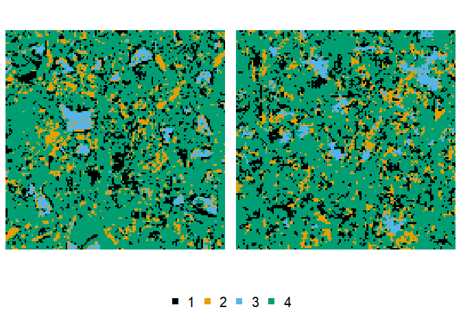

The {nmhsa} R package provides an R wrapper around the NMHSA Python implementation by Lemmens et al. (2019) for performing porous media reconstruction using an advanced simulated annealing approach.
Install
You can install the latest version of {nmhsa} with the following:
if (!require(pak)) install.packages("pak")
pak::pak("rogiersbart/nmhsa")Use
To run the algorithms from the examples in the original Python code, you at least need a 2D array as training image, and resort to the hsa(), mhsa() or nmhsa() functions, through which the algorithms are exposed to the R user. Hyperparameters and corresponding defaults have been thorougly revised, so we recommend you read the help pages of these functions in detail. For making use of the nesting available in nmhsa(), the training image has to be processed, and one or two modified versions of the image have to be provided as well. Here’s a minimal example with the cement training image provided in the package:
library(nmhsa)
#> ! {nmhsa} is still in its experimental lifecycle stage.
#> ! Use at your own risk, and submit issues here:
#> ! <]8;;https://github.com/rogiersbart/nmhsa/issueshttps://github.com/rogiersbart/nmhsa/issues]8;;>
reconstruction <- hsa(cement)
#> v Preparing the Python backend ... done
#> v Reconstructing ... done
plot(cement, reconstruction)
For more information, refer to the “Getting started” article.